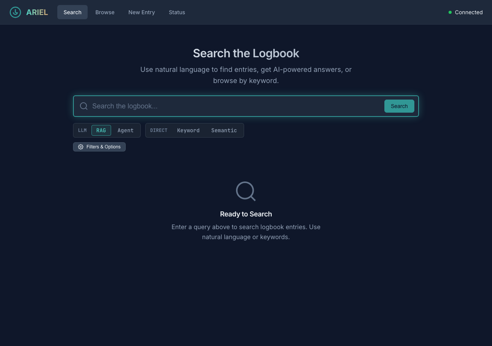
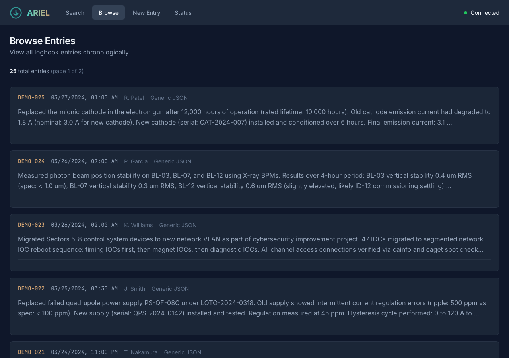
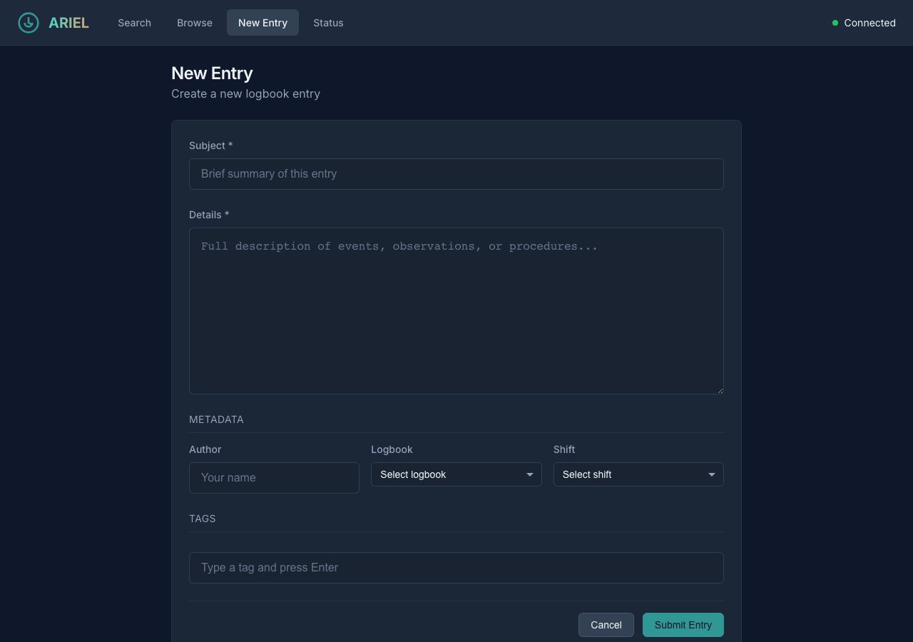
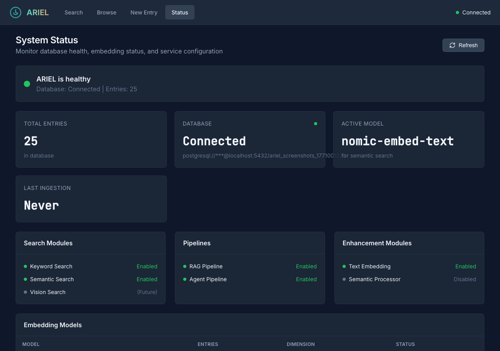

Web Interface#
Experimental
The ARIEL web interface is experimental and under active development. Its API endpoints, frontend architecture, and configuration options may change in future releases.
ARIEL ships with a browser-based search interface that provides the same search capabilities as the CLI in a more approachable form. The interface is a FastAPI application serving a JavaScript single-page application (SPA). It connects to the same ARIELSearchService as the CLI and the logbook_search capability, so any search module or pipeline you register is automatically available in the UI.
Browser (SPA) Server (FastAPI)
┌──────────────────────┐ ┌──────────────────────────┐
│ index.html │ │ create_app() │
│ ├── js/app.js │ REST API │ ├── /api/capabilities │
│ ├── js/search.js │ ─────────── │ ├── /api/search │
│ ├── js/entries.js │ │ ├── /api/entries │
│ ├── js/dashboard.js │ │ ├── /api/status │
│ └── css/*.css │ │ └── ARIELSearchService │
└──────────────────────┘ └──────────────────────────┘
Views#
The interface has four views, accessible via the navigation bar. All views are rendered client-side using hash-based routing (#search, #browse, #create, #status).
The primary view. A search bar with mode tabs (Keyword, Semantic, RAG, Agent — only enabled modes are shown) and an expandable advanced options panel. Results display as entry cards with relevance scores and highlights. RAG and Agent modes show a generated answer above the entry list. Press Enter to submit a query; Ctrl+Enter submits with the current advanced options.
{kind=link}

Search view with RAG mode selected, showing LLM and Direct mode tabs.#
Paginated chronological listing of all logbook entries. Each entry shows its timestamp, author, and a text preview. Click an entry to view its full content. Filter by date range, author, or source system.
{kind=link}

Browse view showing paginated entries sorted newest-first.#
Form for creating new logbook entries directly from the interface. Fields include subject, details, author, logbook, shift, and tags. New entries are stored with source_system: "ARIEL Web" and receive a generated entry_id in the format ariel-web-<uuid>. Created entries are searchable immediately.
{kind=link}

New entry form for creating logbook entries from the web interface.#
Dashboard showing service health, database connection, entry count, embedding tables, enabled modules, and last ingestion timestamp. The dashboard polls /api/status on load, making it useful for verifying that the service is configured correctly after deployment.
{kind=link}

Status dashboard showing service health and configuration.#
Capabilities API#
The web interface discovers its search modes and tunable parameters dynamically at startup by calling GET /api/capabilities.
The “add a module, get a UI knob for free” pattern: When you register a custom search module with get_parameter_descriptors(), its parameters automatically appear in the web interface’s advanced options panel. The ParameterDescriptor dataclass supports types int, float, bool, text, date, select, and dynamic_select (which fetches options from an API endpoint). Parameters are grouped by section for visual organization.
Security & Resilience
XSS-safe highlights: Search result highlights from PostgreSQL
ts_headlineare sanitized bysanitizeHighlight()incomponents.js— only<b>and</b>tags are preserved; all other HTML is escaped.CORS: The development server uses
allow_origins=["*"]. Restrict this in production deployments.Frontend fallback: If
/api/capabilitiesis unavailable at startup, the frontend falls back to a default mode list so the interface remains usable.
Technical Reference
All endpoints are mounted under the /api prefix.
Method |
Endpoint |
Description |
|---|---|---|
GET |
|
Discover available search modes and parameters |
GET |
|
Get distinct values for a filterable field ( |
POST |
|
Execute a search query (body: |
GET |
|
List entries with pagination and filtering |
GET |
|
Get a single entry by ID |
POST |
|
Create a new logbook entry (body: |
GET |
|
Service health, module status, and statistics |
Additionally, a GET /health endpoint at the root level returns a simple health check response.
SearchResponse:
{
"entries": [
{
"entry_id": "12345",
"source_system": "ALS eLog",
"timestamp": "2025-01-15T08:30:00Z",
"author": "J. Smith",
"raw_text": "RF cavity trip at 08:15...",
"summary": "RF cavity fault requiring manual reset",
"keywords": ["RF", "cavity", "trip"],
"score": 0.92,
"highlights": ["<b>RF cavity</b> trip at 08:15"]
}
],
"answer": "The RF cavity tripped at 08:15 due to...",
"sources": ["12345"],
"search_modes_used": ["keyword", "rag"],
"total_results": 1,
"execution_time_ms": 340
}
StatusResponse:
{
"healthy": true,
"database_connected": true,
"database_uri": "postgresql://localhost:5432/ariel",
"entry_count": 15230,
"embedding_tables": [
{"table_name": "embeddings_nomic_embed_text", "entry_count": 15230, "dimension": 768, "is_active": true}
],
"active_embedding_model": "nomic-embed-text",
"enabled_search_modules": ["keyword", "semantic"],
"enabled_pipelines": ["rag", "agent"],
"enabled_enhancement_modules": ["text_embedding", "semantic_processor"],
"last_ingestion": "2025-01-15T06:00:00Z",
"errors": []
}
See osprey.interfaces.ariel.api.schemas for the full Pydantic model definitions.
The /api/capabilities endpoint returns a JSON structure describing every enabled search module and pipeline, along with their parameters:
{
"categories": {
"direct": {
"label": "Direct",
"modes": [
{
"name": "keyword",
"label": "Keyword",
"description": "Full-text PostgreSQL search...",
"parameters": [
{
"name": "fuzzy_fallback",
"label": "Fuzzy Fallback",
"param_type": "bool",
"default": true,
"section": "Search"
}
]
}
]
},
"llm": {
"label": "LLM",
"modes": [
{
"name": "rag",
"label": "RAG Pipeline",
"description": "Retrieve, fuse, and generate...",
"parameters": []
}
]
}
},
"shared_parameters": [
{"name": "max_results", "param_type": "int", "default": 10},
{"name": "start_date", "param_type": "date"},
{"name": "author", "param_type": "text"},
{"name": "source_system", "param_type": "dynamic_select",
"options_endpoint": "/api/filter-options/source_systems"}
]
}
How it works: The get_capabilities() function in osprey.services.ariel_search.capabilities iterates over enabled search modules and pipelines from the registry. Each module provides a get_tool_descriptor() (for its description) and optionally get_parameter_descriptors() (for its tunable parameters). Pipelines provide a get_pipeline_descriptor() with a category field ("direct" or "llm") that determines which tab group the mode appears in.
App factory: The create_app() function in osprey.interfaces.ariel.app is a standard FastAPI app factory. It accepts an optional config_path argument and returns a fully configured FastAPI application with CORS middleware, API routes, and static file serving.
Lifespan management: The app uses FastAPI’s lifespan context manager to initialize the ARIELSearchService on startup and clean it up on shutdown. During initialization:
Registry bootstrap — pre-creates the framework registry singleton (without an application registry path) so that ARIEL’s search module and pipeline discovery works even when running outside a full Osprey application.
Config loading — searches for
config.ymlin four locations: the providedconfig_path,/app/config.yml(Docker mount), theCONFIG_FILEenvironment variable, and the current directory. Applies theARIEL_DATABASE_HOSTenvironment variable override for Docker networking.Service creation — creates the
ARIELSearchServicefrom the loaded config and stores it inapp.state.ariel_service.Health check — validates the database connection and logs the result.
Docker environment overrides:
Variable |
Description |
|---|---|
|
Path to config.yml (alternative to default search) |
|
Override database hostname in URI (e.g., |
The frontend is a vanilla JavaScript SPA — no build tools, no framework, no transpilation. All files are served as static assets from src/osprey/interfaces/ariel/static/.
JavaScript modules:
Module |
Responsibility |
|---|---|
|
Application initialization, hash-based routing, health check polling |
|
REST client wrapping |
|
Search form, mode tabs, results rendering |
|
Capabilities-driven advanced options panel (dynamic parameter controls) |
|
Browse view with pagination, entry detail view, new entry form |
|
Status dashboard rendering |
|
Shared UI components (entry cards, loading states, error messages) |
CSS architecture:
File |
Scope |
|---|---|
|
Design tokens (colors, spacing, typography, transitions) |
|
Reset, typography, form elements |
|
Cards, buttons, badges, modals, search results |
|
Header, navigation, main content, responsive grid |
Routing: The app uses window.location.hash for navigation. The app.js module listens for hashchange events and shows/hides view sections (#search, #browse, #create, #status). No page reloads occur during navigation.
Running the Web Interface#
CLI mode (recommended for development):
osprey ariel web # http://localhost:8085
osprey ariel web --port 8080 # Custom port
osprey ariel web --host 0.0.0.0 # Bind to all interfaces
osprey ariel web --reload # Auto-reload on code changes
Deployed service (via Osprey’s deploy system):
Add ariel_web to deployed_services in config.yml:
deployed_services:
- postgresql
- ariel_web
services:
ariel_web:
path: ./services/ariel-web
port_host: 8085
Then start with osprey deploy up. The deployed container mounts config.yml at /app/config.yml and uses the ARIEL_DATABASE_HOST variable to resolve the database within the Docker network.
Programmatic usage:
from osprey.interfaces.ariel.app import create_app
app = create_app(config_path="config.yml")
# Use with uvicorn
import uvicorn
uvicorn.run(app, host="0.0.0.0", port=8085)
Collaboration Welcome
The web interface is a great place to contribute — whether that is a new view, improved accessibility, mobile-responsive layouts, or better error handling. If you build something useful, we encourage you to open a pull request so it becomes part of Osprey.
See Also#
- Search Modes
Search module and pipeline architecture
- Osprey Integration
Capability, context flow, and prompt builder
- CLI Reference
CLI reference for
osprey ariel weband all other ARIEL commands- ARIEL Search Service
Full API reference for ARIEL classes